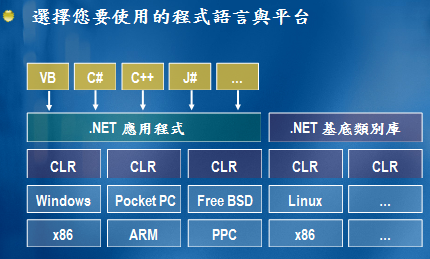

.NET是一个平台，一个抽象的平台的概念。它不是什么编程方法，更不是什么编程语言之类的。
通常我们所说的.NET Framework（.net框架）主要包括：.net类库和CLR。
.net类库为我们提供了丰富的类，当然这些都是已经封装好的，我们可以直接使用，不同的类具有不同的功能。类库中广泛的类为我们程序功能的实现提供了足够的资源。
CLR（公共语言运行时）则是实现程序运行的基础，任何针对于CLR的语言，最终都在CLR的托管下有序运行。语言只要是针对CLR最终都会被编译成MSIL（一种中间语言），所以，这样可以实现不同语言之间的相互操作（当然前提是这种语言有针对CLR的编译器）。
.net软体开发：

.net的特色：
vb,vb.net和C#都只是程序设计语言.程序设计语言仅仅是为了方便开发人员和计算机沟通的工具
C#语言:C#是微软公司发布的一种面向对象的、运行于.NET Framework之上的高级程序设计语言。虽然C#语法相对C和C++要多一些，但是相对来看C#语法都比较固定，这样使用起来却都很容易。
vb.net:作为VB6.0的后续版本，VB.NET更加稳定，而且完全面向对象。也许你还记得，VB6.0支持多态、接口，但它不是真正面向对象的。而VB.NET则支持这些面向对象特性。VB6.0有两个薄弱环节——多线程和异常处理。在VB.NET中，开发多线程应用和使用C++/C#别无二致，结构化异常处理也得到支持。
Visual Studio.net允许用户开发多条互不相干的多线程的应用程序。也就是说，当用户在执行一个程序的时候，也可以在另外一条的线程独立地运行另外一个任务程序，这种过程被称为自由线程(free threading)。对于用户而言，自由线程概念的引入，使得应用程序对用户的响应将更加积极，因为任务处理器能够在某个线程正在运行时，依然保持界面对用户的响应，只要对用户响应的线程正在运行。而且，自由线程在运行大型的程序的时候，也将会很有用，因为随着运行任务的增加，用户可以多开辟几个线程来运行程序。
vb.net特性:
·面向对象的编程语言。支持继承、重载、接口、共享成员和构造器。
·支持所有的CLS（common language specification）特性，如存取控制.NET类、与其它.NET语言交互、元数据、公共数据类型、委托等等。
·多线程支持。
·结构化异常处理
VB语言的一大弱点就是缺乏编写自由线程（free-threaded）程序的能力。在.NET Framework中，所有语言共享CRL（Common RuntimeLibrary，公共运行库），也就是说，你可以用VB.NET、C#或其它.NET语言编写同样的程序。
异常处理也被称之为错误处理。作为学习过vb的我们，你一定对OnError Goto和On Error ResumeNext这些VB6.0错误处理语句耳熟能详。这种类型的错误处理被称为非结构化异常处理（Unstructured ExceptionHandling）。而在VB.NET中，Microsoft推出了结构化异常处理机制。VB.NET支持类似C++的TryCatch..Finally控制。
在这里只是笼统的介绍了一下vb与vb.net的区别，下篇博客将继续总结二者的区别！